Тема: «Біорізноманіття основних груп багатоклітинних організмів: еволюційні здобутки та екологічні виклики»
Клас10
Тип проєктуІнформаційно-пошуковий, дослідницький, творчий
ТривалістьСередньостроковий (2–3 тижні)
Форма організаціїРобота в малих групах (по 3–5 учнів)
ПошуковаЗібрати та проаналізувати наукову інформацію про обрану групу організмів, використовуючи сучасні системи класифікації (тридоменну систему).
ДослідницькаВиявити та описати конкретні адаптації (морфологічні, фізіологічні, поведінкові) організмів до їхнього середовища існування; дослідити локальне біорізноманіття своєї місцевості.
ТворчаСтворити фінальний продукт, який популяризує знання про біорізноманіття (інтерактивний плакат, веб-сайт, буклет, міні-відео).
Проєкти груп
Оберіть групу організмів, щоб побачити її проєкт.
Хребетні тварини
Будова тіла як еволюційний здобуток: як анатомія визначає спосіб життя
Уявіть ропуху, яка ховається в сухому листі, голуба, що маневрує в повітрі, та качку, яка впевнено тримається на воді. Їх об’єднує одна цікава особливість — будова їхнього тіла формувалася протягом мільйонів років еволюції, що допомогло їм пристосуватися до власного середовища існування.
1. Що таке особливості будови тіла?
Будова тіла (морфологія та анатомія) — це сукупність органів, тканин і зовнішніх покривів, які забезпечують функціонування організму в певних умовах довкілля.
Різні групи тварин пристосувалися до свого середовища завдяки змінам у будові скелета, м’язів, шкіри та внутрішніх органів. На прикладі земноводних (ропухи або жаби) та птахів (голуба й качки) можна побачити, як будова тіла відповідає способу життя — від перебування біля води до польоту в повітрі.
2. Будова тіла земноводних (ропуха / жаба)
Земноводні є однією з груп хребетних, які пристосувалися до життя і у воді, і на суходолі. Їхня будова тіла поєднує особливості, необхідні для обох середовищ:
Будова покривів: тонка шкіра не має луски й укрита слизом, який виділяють залози. У шкірі багато капілярів, тому через неї відбувається газообмін.
Будова скелета та м’язів: задні кінцівки значно довші за передні та мають добре розвинені м’язи, що допомагає тваринам стрибати. У дорослих жаб і ропух хвостовий відділ хребта відсутній.
Органи чуттів: очі мають повіки та мигальну перетинку, які захищають їх від висихання й бруду на суходолі.
3. Будова тіла птахів, які літають (голуб)
У птахів будова тіла пристосована до польоту. Для цього в них сформувалися особливі характеристики різних систем органів:
Форма тіла та покриви: обтічна форма тіла зменшує опір повітря, а контурне й махове пір’я допомагає літати.
Особливості скелета: деякі кістки птахів мають повітряні порожнини, завдяки чому зменшується вага тіла. Частина кісток черепа та хребта зрослася, що робить скелет міцнішим. Щелепи не мають зубів.
М’язи та скелет: передні кінцівки перетворилися на крила. Їхній рух забезпечують добре розвинені грудні м’язи, які прикріплюються до міцного кіля — виросту груднини.
4. Будова тіла водоплавних птахів (качка)
Качка також належить до птахів, але її тіло має додаткові пристосування до життя у воді:
Будова кінцівок: між пальцями лап є шкірясті перетинки, які допомагають плавати. Ноги розташовані ближче до задньої частини тіла, що полегшує пересування у воді.
Захист покривів: куприкова залоза виділяє жироподібний секрет. Качка розподіляє його по пір’ю, завдяки чому воно менше намокає та краще зберігає тепло.
Будова дзьоба: дзьоб широкий і сплющений, а по його краях є рогові пластинки, які допомагають відціджувати їжу з води.
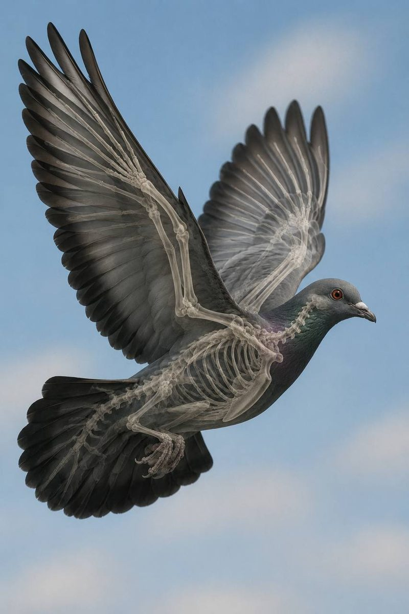
ГолубЛегкий скелет і міцний кіль для м’язів крил
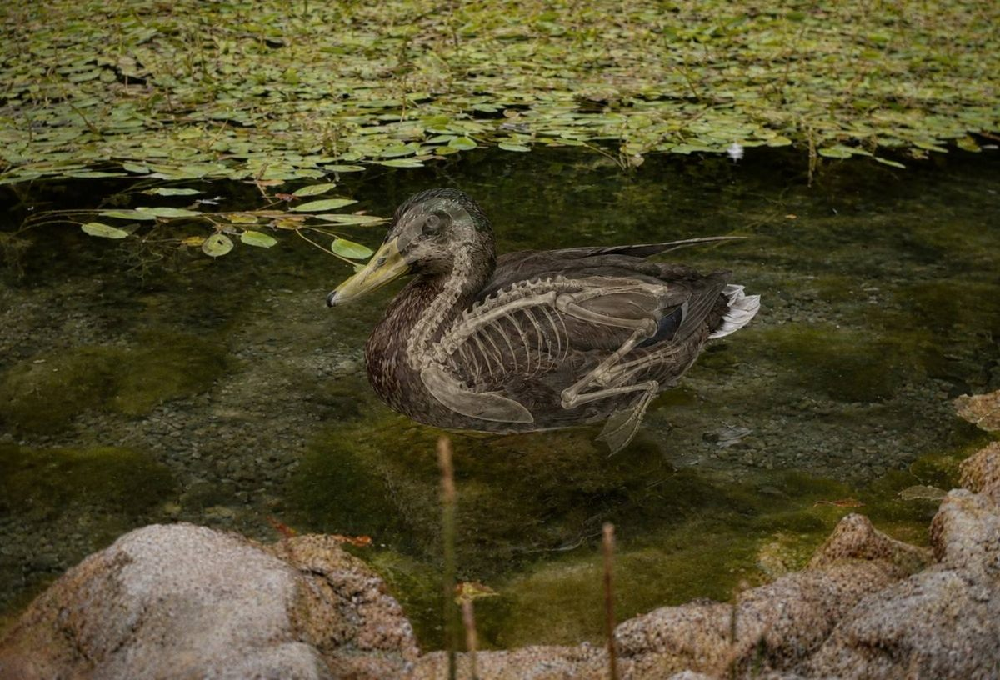
КачкаПристосування до життя на воді
5. Переваги та обмеження різної будови тіла
Особливості будови тіла допомагають тваринам виживати, але водночас мають певні обмеження:
Залежність від середовища: шкіра земноводних легко втрачає вологу, тому вони залежать від вологого середовища.
Високі витрати енергії: політ потребує добре розвинених м’язів і значної кількості енергії, тому в птахів інтенсивний обмін речовин.
Висновок
Будова тіла кожного організму формувалася в процесі еволюції та допомагає йому пристосовуватися до навколишнього середовища. Кожна особливість — від будови шкіри й пір’я до форми кісток і дзьоба — має своє значення.
Завдяки таким пристосуванням хребетні тварини змогли освоїти різні середовища існування: суходіл, воду та повітря.
Теплокровні хребетні: як організм керує власним теплом
Уявіть пінгвіна серед крижаних просторів Антарктиди, лисицю в засніженому лісі та колібрі, яка стрімко махає крилами. Як ці тварини залишаються активними, коли температура навколишнього середовища постійно змінюється? Секрет полягає в особливій властивості їхнього організму — теплокровності.
Що таке теплокровність?
До теплокровних хребетних належать птахи та ссавці. Вони здатні підтримувати відносно сталу температуру тіла незалежно від температури довкілля. Це відбувається завдяки терморегуляції — сукупності процесів, які забезпечують утворення, збереження та віддачу тепла.
Терморегуляція є частиною гомеостазу — здатності організму підтримувати відносну сталість внутрішнього середовища. Наприклад, якщо тілу стає холодно, організм активує механізми збереження тепла, а коли спекотно — посилює його віддачу.
Звідки береться тепло?
Основним джерелом тепла є обмін речовин (метаболізм) — сукупність хімічних реакцій, завдяки яким клітини отримують енергію та забезпечують життєдіяльність організму. Частина цієї енергії перетворюється на тепло.
Важливу роль відіграють і мітохондрії — органели клітин, у яких відбувається значна частина процесів клітинного дихання та утворення АТФ, основного енергетичного носія клітини.
Проте виробити тепло недостатньо — його потрібно ще й зберегти. Для цього тварини мають різноманітні пристосування: густе хутро, пір’я та підшкірний жировий шар. Наприклад, у полярного ведмедя ці особливості допомагають зменшувати втрату тепла в холодному кліматі.
Як працює терморегуляція?
Температуру тіла контролює нервова система, зокрема гіпоталамус — ділянка головного мозку, яка бере участь у регуляції багатьох внутрішніх процесів.
Коли температура тіла знижується, кровоносні судини шкіри звужуються, а м’язове тремтіння сприяє утворенню додаткового тепла. У спеку судини розширюються, а потовиділення в багатьох ссавців допомагає охолоджувати організм.
Ці реакції є прикладом негативного зворотного зв’язку — механізму регуляції, за якого відхилення певного показника запускає процеси, що повертають його до нормального рівня.
Чому теплокровність дає перевагу?
Завдяки здатності регулювати температуру тіла птахи й ссавці можуть залишатися активними за різних погодних умов і заселяти найрізноманітніші середовища — від полярних областей до пустель.
Однак така перевага потребує значних енергетичних витрат. Тому теплокровні тварини повинні отримувати достатньо поживних речовин, які під час обміну речовин забезпечують організм енергією.
Цікавий факт: деякі дрібні ссавці, наприклад їжаки та кажани, за певних умов можуть впадати в стан заціпеніння або сплячки. У цей час температура їхнього тіла й інтенсивність обміну речовин знижуються, що допомагає економити енергію.
Отже, теплокровність — це не просто здатність зігріватися, а складна система фізіологічних механізмів, яка підтримує гомеостаз і дає змогу організму функціонувати навіть за значних змін довкілля.
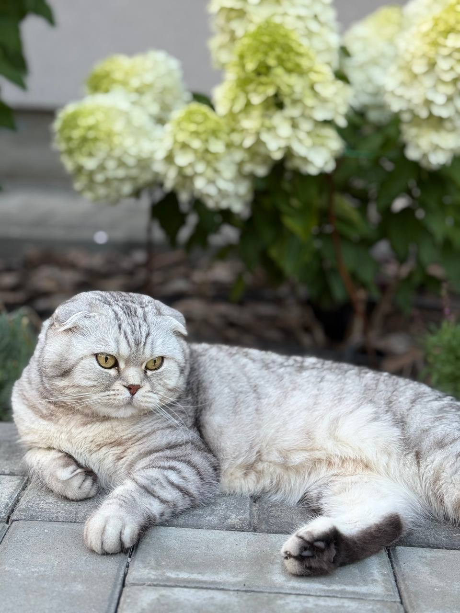
КішкаГусте хутро зберігає тепло
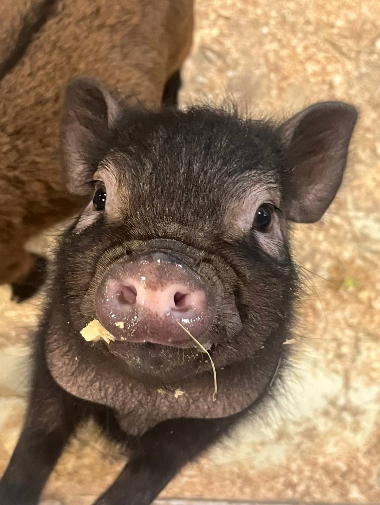
Порося
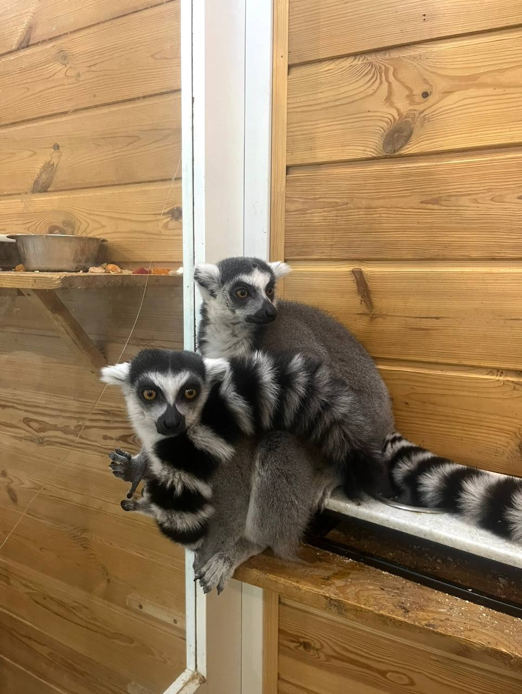
Мармозетка
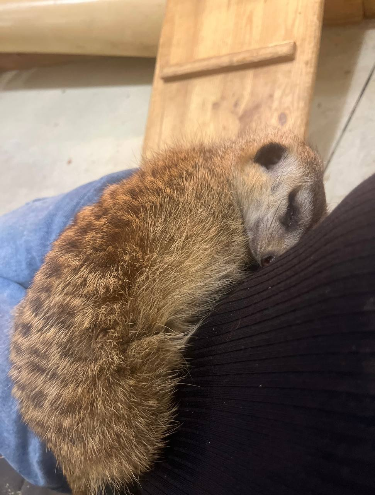
Сурикат
Як різні класи тварин вирішили проблему дихання і терморегуляції на суходолі
1. Проблема суходолу
На суходолі кисню багато, але є дві проблеми: висихання через дихальну поверхню та різкі зміни температури.
Головна ідея. Виграє той, хто дихає без втрати води і тримає свою температуру.
2. Порівняння класів
Клас
Дихання
Захист від висихання
Температура
Земноводні
Прості легені + шкіра (до 50% газообміну)
Волога шкіра зі слизом, життя біля води
Холоднокровні, гріються на сонці
Плазуни
Тільки складчасті легені
Суха луска, яйце зі шкаралупою
Холоднокровні + баскінг на сонці
Птахи
Легені + повітряні мішки, подвійне дихання
Пір'я, сечова кислота
Теплокровні ~40–42 °C
Ссавці
Альвеолярні легені + діафрагма
Шерсть, піт, нирки концентрують сечу
Теплокровні ~36–39 °C
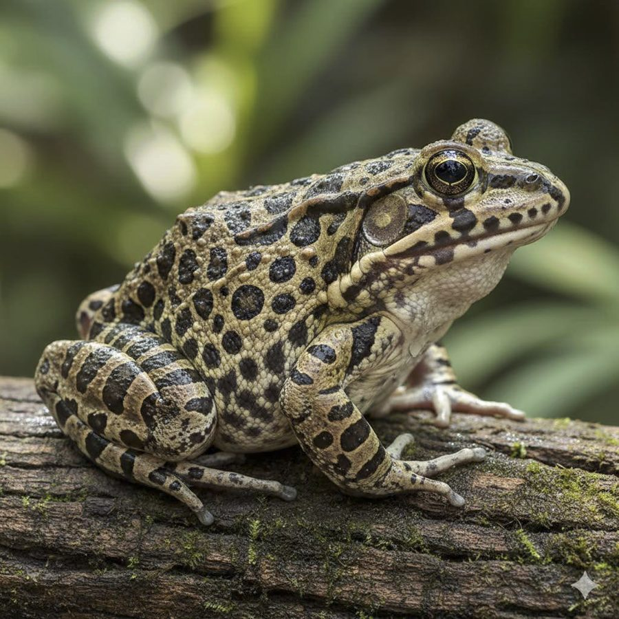
ЗемноводніВолога шкіра, життя біля води
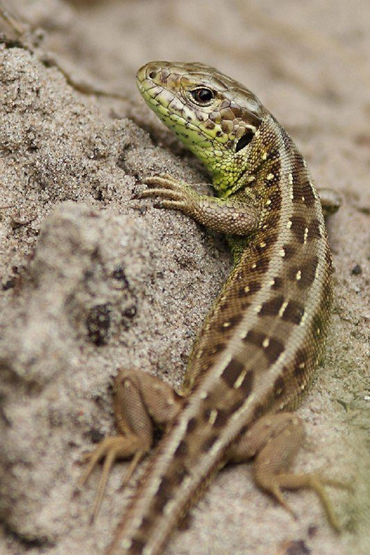
ПлазуниСуха луска, баскінг на сонці
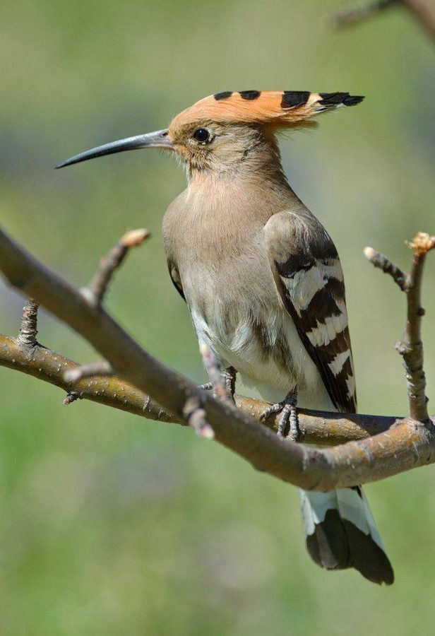
ПтахиПір'я, теплокровність
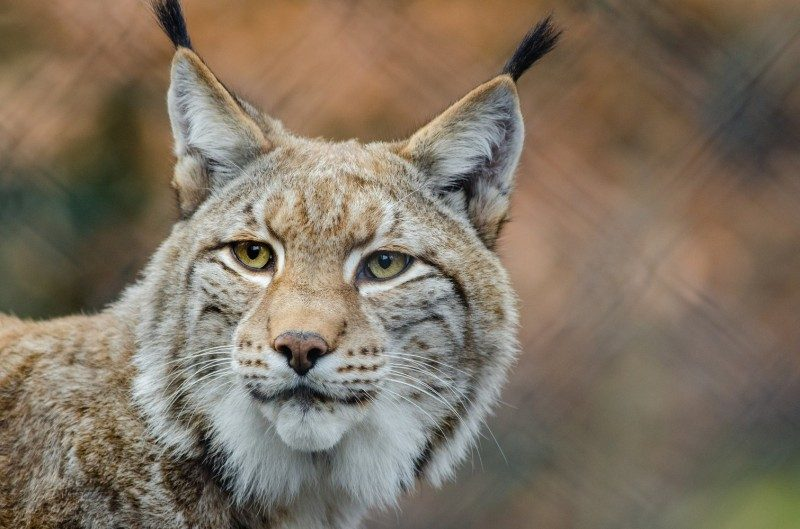
СсавціШерсть, теплокровність
Холоднокровні vs Теплокровні
Холоднокровні
Гріються від сонця: земноводні, плазуни.
Теплокровні
Гріються від власного обміну речовин: птахи, ссавці.
3. Висновок
Захист від висиханняволога шкіра → луска → пір'я і шерсть.
Регуляція теплазалежність від сонця → власна «пічка».
Результаттеплокровність дала птахам і ссавцям активність.
...
Будова дзьобів — вплив типу живлення птаха
1. Головна мета
На практичному прикладі довести, що форма дзьобу безпосередньо залежить від умов середовища, способу добування їжі та безпосередньо раціону.
2. Моя робота
Я провела віртуальний бердвотчинг й обрала 5 місцевих видів птахів, яких було б цікаво розглянути.
Пошук інформації → її обробка → створення відео → кінець!
3. Результати спостережень
1) Кулик-сорока (Червона книга)
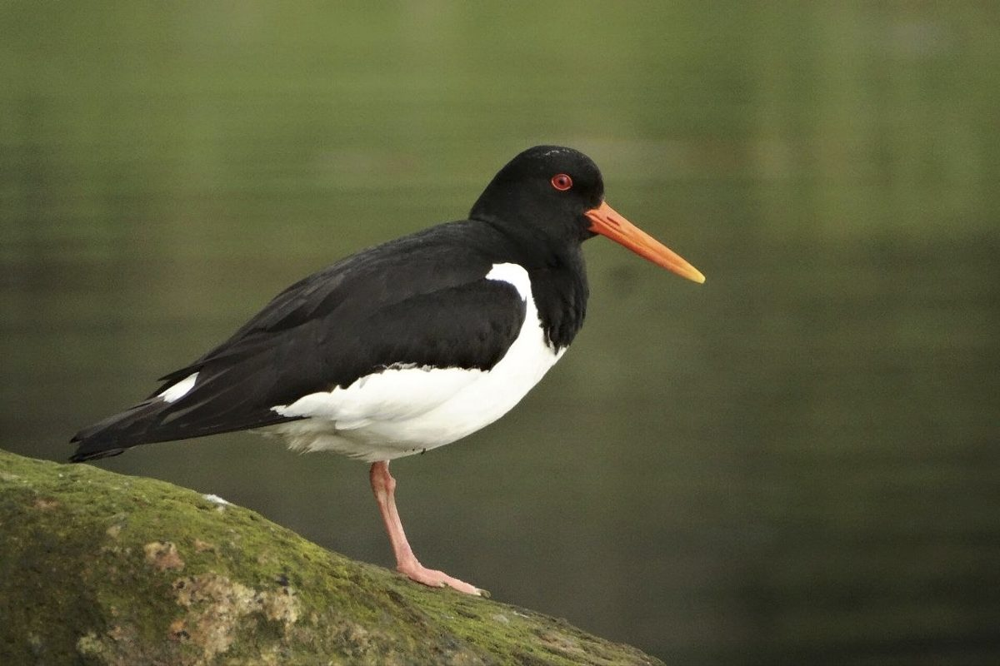
Дорослий кулик-сорокасамка
Тип дзьоба — довгий, прямий, сильний та сильно сплюснутий з боків (долотоподібний / ножеподібний).
Тип живлення — тваринноїдний (зоофаг / малакофаг), основу раціону складають двостулкові молюски, морські черви, ракоподібні та личинки комах.
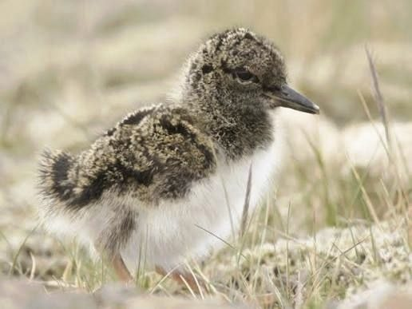
Пташеня
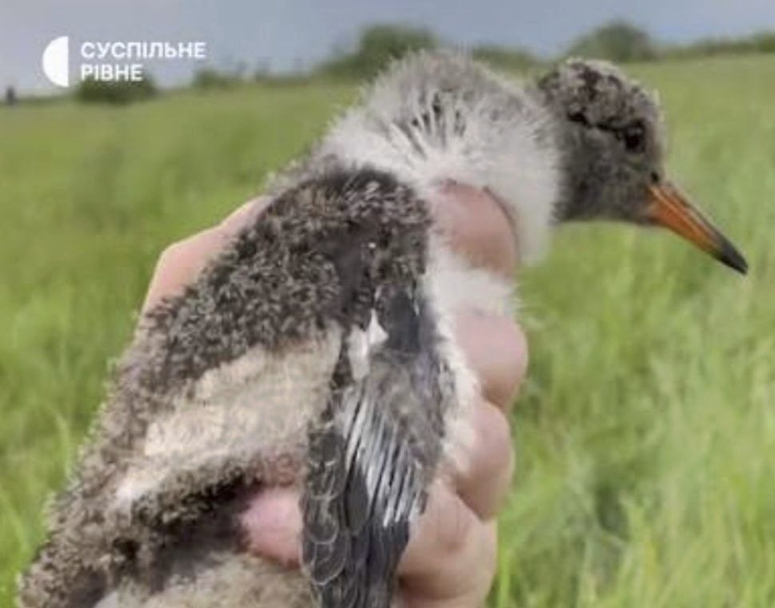
Процес дорослішання
У пташенят кулика-сороки дзьоб зовсім не схожий на дзьоб дорослих птахів. При народженні він короткий, порівняно м’який та тупий на кінці, адже довгим і твердим органом пташеня просто не змогло б вилупитися з яйця, а в перші тижні життя м’яку їжу йому все одно подають батьки. У міру дорослішання дзьоб стрімко витягується, сплющується з боків та твердне, перетворюючись на міцний інструмент для добування молюсків і ракоподібних.
Цікаво, що остаточна форма кінчика дзьоба залежить саме від того, чого навчать пташеня батьки: якщо вони привчають його пробивати мушлі ударами, кінчик стає загостреним, а якщо розсувати стулки чи шукати здобич у мулі — більш тупим і пласким.
2) Євразійський великий крех
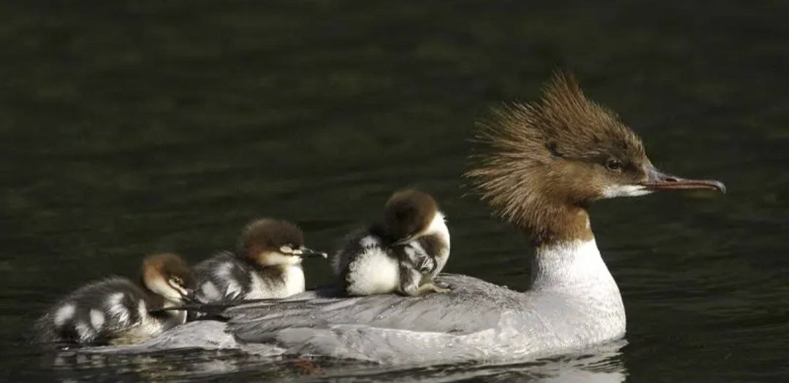
Великий крехдоросла самка з пташенятами
Тип дзьоба — довгий, вузький та циліндричної форми, з добре помітним загнутим гачком на кінці та гострими роговими зазублинами вздовж країв (пилкоподібний / «риболовний» дзьоб). Завдяки такій специфічній будові птах може міцно і надійно утримувати слизьку здобич під час полювання.
Тип живлення — хижий (іхтіофаг), основу раціону складає переважно жива риба, яку великий крех майстерно добуває під водою, активно пірнаючи на значну глибину. Окрім риби, він також доповнює меню водними безхребетними (ракоподібними, личинками комах, молюсками) та зрідка амфібіями.
3) Шишкар ялиновий
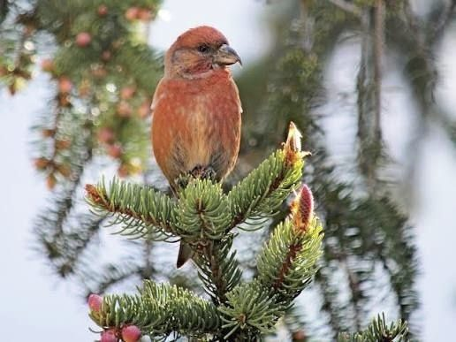
Шишкар ялиновийдорослий самець
Тип дзьоба — міцний, товстий, зі схрещеними кінчиками наддзьобка та піддзьобка (спеціалізований для лущення шишок / схрещений). Завдяки такій дивовижній природній конструкції птах із легкістю та ювелірною точністю розсуває жорсткі лусочки шишок, мов справжнім пінцетом.
Тип живлення — рослиноїдний (стенофаг / гранівор), основу раціону становить поживне насіння хвойних дерев (переважно ялини), яке він віртуозно вилущує навіть у найсуворіші зимові дні.
Пташеня. У пташенят дзьоб спочатку зовсім прямий для легкого вилуплення з яйця. Свою характерну викривлену форму дзьоб набуває через кілька тижнів, коли пташеня починає самостійно здобувати їжу.
4) Жовна чорна (дятел)
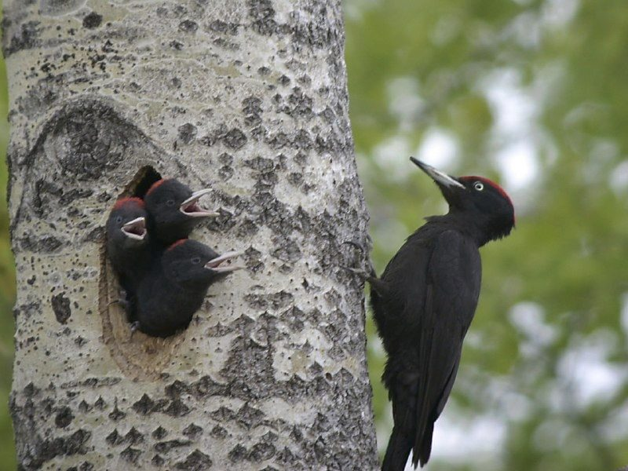
Жовна чорнадоросла самка з пташенятами
Тип дзьоба — довгий, прямий, масивний і чотиригранний (долотоподібний), з міцною основою черепа та унікальними амортизуючими зонами. Цей пернатий лісовий лікар має справжній відбійний молоток: завдяки потужній конструкції він здатний щосекунди завдавати нищівних ударів по деревині, не травмуючи власний мозок.
Тип живлення — тваринноїдний (зоофаг / інсектифаг), основу раціону складають деревогризучі комахи (переважно великі мурахи-деревоточці та їхні личинки, а також жуки-вусачі й короїди), яких він майстерно витягує з-під кори за допомогою надзвичайно довгого та липкого язика.
Ситуація у пташенят приблизно така, як і в попередніх птахів: при народженні їхній дзьоб м’який і порівняно короткий, щоб безпечно вилупитися з яйця, а перші тижні батьки щедро годують малюків м’якою комашиною «протертою» їжею. У міру дорослішання і переходу до самостійного пошуку здобичі дзьоб стрімко твердне й набуває своєї неповторної міцної форми.
5) Качка червоноголова (попелюх)
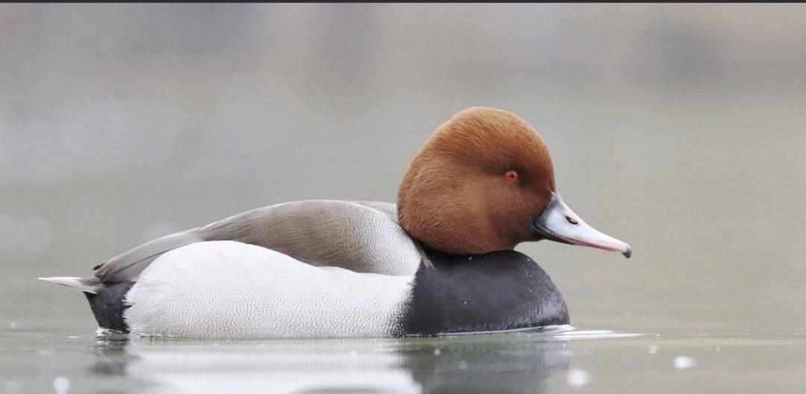
Попелюхдорослий самець
Тип дзьоба — плескатий, середньої довжини, із заокругленим кінчиком і спеціальними роговими пластинками (гребінцями) вздовж країв (пластинчасто-фільтруючий дзьоб). Така особлива будова перетворює його на справжнє сито, за допомогою якого качка легко проціджує воду та донний мул, відсіюючи їжу від сміття.
Тип живлення — всеїдний (з ухилом у фітофагію та бентофагію), основу раціону складають пагони, кореневища й насіння водних рослин, а також водні безхребетні (молюски, личинки комах і ракоподібні), яких птах здобуває, глибоко пірнаючи на дно водойм.
Цікавий факт: на відміну від багатьох інших річкових качок, попелюх — майстерний пірнальник, який здатний занурюватися на глибину до декількох метрів і залишатися під водою до 20 секунд. Під час пірнання він орієнтується не лише зором, а й чутливими нервовими закінченнями на кінчику дзьоба, що дозволяє йому наповнювати дзьоб здобиччю навіть у повній темряві каламутного дна.
Безхребетні тварини
Проєкт «Безхребетні тварини» · учасники: Олександр Тарасенко, Артем Сокол, Богдан Фіалко, Артур Андронік, Глєб Толочко.
Вступ
Коли ми уявляємо володарів фауни, то зазвичай згадуємо великих ссавців або хижих птахів. Проте понад 95% усіх відомих видів тварин на планеті — це безхребетні. Вони заселили геотермальні джерела, океанічні западини та високогір'я за сотні мільйонів років до появи хребта. Їхня анатомія — не спрощена копія нашої, а арсенал біоінженерних рішень: від біологічного безсмертя до децентралізованого мозку.
Наша команда покаже п'ять парадоксів безхребетних, які перевертають уявлення про «примітивність» цих істот.
П'ять парадоксів
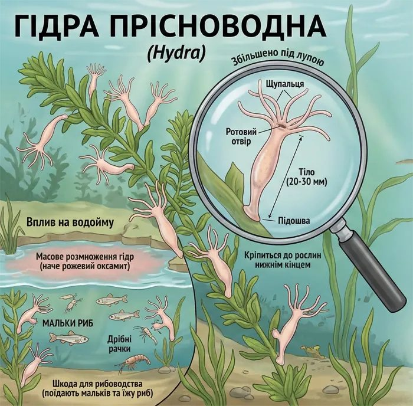
Прісноводна гідра
Hydra · парадокс безсмертя
Систематика
Тип Кнідарії (Кишковопорожнинні).
Анатомічний феномен
Гідра складається всього з двох шарів клітин, але володіє необмеженою здатністю до регенерації. Якщо розрізати тіло гідри на кілька частин, кожна за кілька днів відновить ротовий конус, щупальця та підошву.
Біомеханіка «суперсили»
Її стовбурові клітини постійно діляться, а процес клітинного старіння (сенесценції) фактично заблокований завдяки активності теломерази та білкам.
Парадокс: повна відсутність серця, мозку та скелета дозволила їй вирішити проблему, над якою б'ється вся сучасна медицина — біологічне старіння.
Дві третини нейронів восьминога розташовані не в голові, а в щупальцях. Кожне щупальце здатне самостійно аналізувати смак, текстуру та приймати рухові рішення без прямої команди центрального мозку.
Біомеханіка «суперсили»
У шкірі молюска зосереджені тисячі хроматофорів (еластичних мішечків з пігментом, керованих окремими м'язами) та іридофорів (клітин-дзеркал). Восьминіг повністю змінює колір і рельєф шкіри за 0,2 секунди, ідеально зливаючись із коралами чи піском.
Парадокс: молюск, чиї найближчі родичі — садові равлики, має блакитну мідну кров (гемоціанін), три серця та інтелект, порівнянний із вищими хребетними.
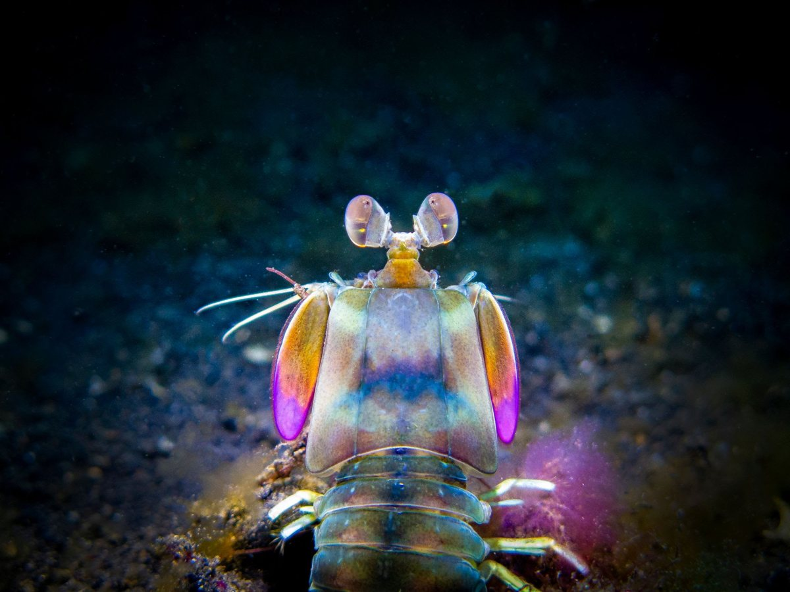
Рак-богомол
Odontodactylus scyllarus · парадокс «квантового» зору та фізики удару
Систематика
Тип Членистоногі, Підтип Ракоподібні.
Анатомічний феномен
Очі рака-богомола мають 16 типів зорових фоторецепторів (у людини лише 3) і сприймають ультрафіолетове світло, поляризацію та глибину кожним оком окремо.
Біомеханіка «суперсили»
Його кінцівки-дробарки викидаються вперед із прискоренням кулі 22-го калібру (швидкість понад 80 км/год). Удар настільки швидкий, що у воді виникає явище кавітації — утворюються бульбашки вакууму, схлопування яких виділяє тепло, порівнянне з температурою на поверхні Сонця, розбиваючи мушлі найміцніших молюсків.
Парадокс: біохімічний екзоскелет витримує багаторазові вибухові навантаження без появи тріщин завдяки амортизуючій структурі хітину у формі спіралі Булігана.
Напівпрозорий карапакс робить дафнію відкритою лабораторією: під мікроскопом видно роботу її одинарного ока, пульсацію серця та перистальтику кишківника.
Дослідницька роль
Через прозорі стінки та високу швидкість обміну речовин дафнії першими реагують на токсини, пестициди та важкі метали у воді. Сповільнення частоти серцебиття або зміна траєкторії руху дафній є стандартизованим тестом екологічного моніторингу річок і озер.
Парадокс: мікроскопічний рачок розміром у пару міліметрів виступає головним контролером якості питної води для багатомільйонних міст.
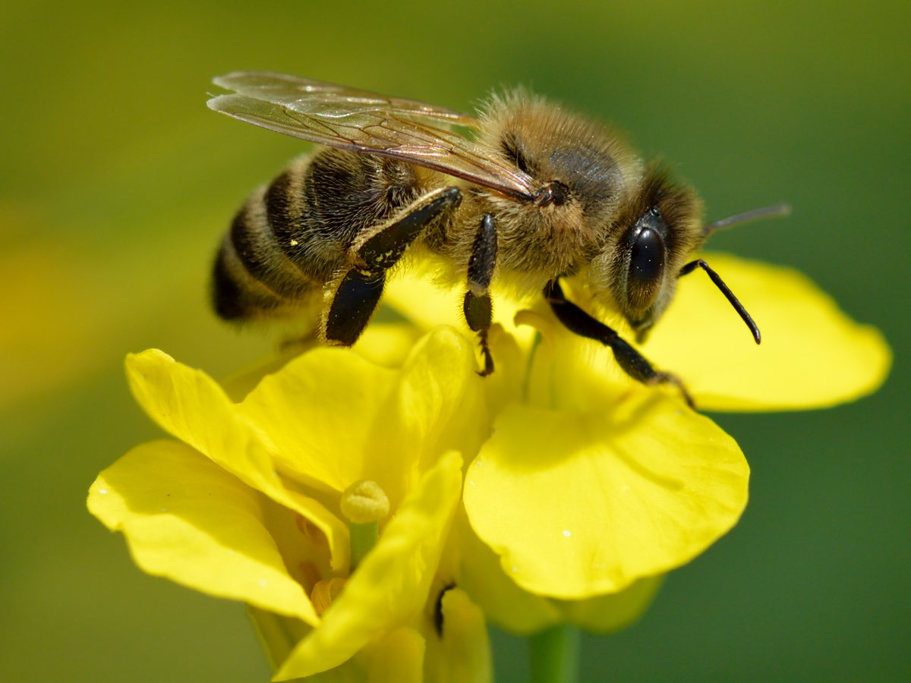
Бджола медоносна
Apis mellifera · парадокс колективного запилення
Систематика
Тип Членистоногі, Ряд Перетинчастокрилі.
Анатомічний феномен
Механіка польоту бджоли довгий час вважалася аеродинамічним парадоксом. Вона робить до 230 помахів на секунду з короткою амплітудою, генеруючи мініатюрні повітряні вихори над крилом, що забезпечує колосальну підйомну силу при мініатюрних розмірах.
Дослідницька частина
Бджоли та дикі запилювачі забезпечують розмноження понад 75% провідних продовольчих культур світу (плодові сади, овочі, ягоди, олійні культури). Їхнє гіпотетичне вимирання призведе не просто до дефіциту меду, а до обвалу світового агросектору, зникнення кормових трав (люцерна, конюшина) для тваринництва та втрати вітамінної бази для людства.
Парадокс: окрема бджола живе лише кілька тижнів, але сім'я функціонує як єдиний суперорганізм, на якому тримається глобальна продовольча безпека планети.
Висновок
Наш аналіз спростовує твердження про «примітивність» безхребетних. Відсутність хребта виявилася не еволюційним обмеженням, а перевагою, яка відкрила простір для різноманітних морфологічних рішень: від гідростатичного скелета головоногих до надміцного хітинового панцира членистоногих. Безхребетні — це фундаментальний каркас біосфери, без роботи якого наземні та водні екосистеми зазнають колапсу за лічені тижні.